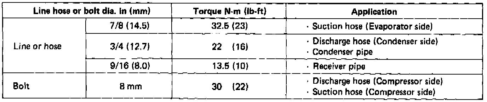

A/C Service Tips and Precautions
Service TipsCAUTION:
1. Always disconnect the negative cable tram the battery whenever replacing air conditioner parts.
2. Keep moisture and dust out of the system. When disconnecting any lines, plug or cap the fittings immediately; don't remove the caps or plugs until just before the lines are reconnected.
3. Before connecting any hose or line, apply a few drops of refrigerant oil to the seat of the 0-ring or flare nut.
4. When tightening or loosening a fitting, use a second wrench to support the matching fitting.
5. When discharging the system, use a refrigerant recovery system; don't release refrigerant into the atmosphere.
6. Add refrigerant oil after replacing the following parts:
Condenser 30 cc (1 fl oz)
Evaporator 60 cc (2 fl oz)
Line or hose 10 cc (1/3 fl oz)
Receiver 10 cc (1/3 fl oz)
Compressor
When a new compressor is installed, drain 30 cc (1 fl oz) of refrigerant oil from the suction fitting on the compressor, unless you are also replacing any of the above parts. Then pro-rate the amount you drain by the amount you should add for the other part(s).
7. Tighten nuts to the following torque:

WARNING: When handling refrigerant (R-12):
- Always wear eye protection.
- Do not let refrigerant get on your skin or in your eyes. If it does:
- Do not rub your eyes or skin.
- Splash large quantities of cool water in your eyes or on your skin.
- Rush to a physician or hospital for immediate treatment. Do not attempt to treat it yourself.
- Keep refrigerant containers (cans of R-12) stored below 40°C (100°F).
- Do not handle or discharge refrigerant in an enclosed area near an open flame: it may ignite and produce a poisonous gas.